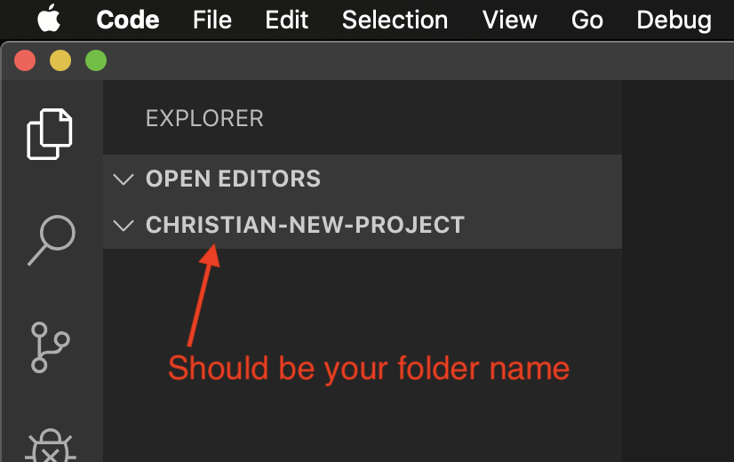
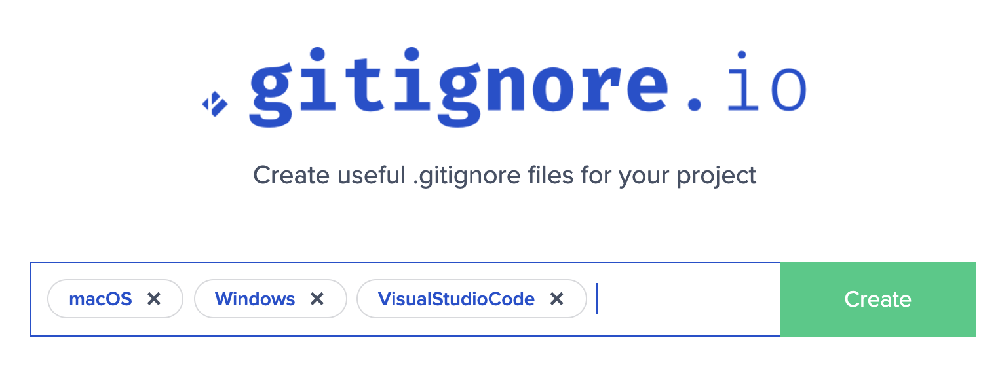
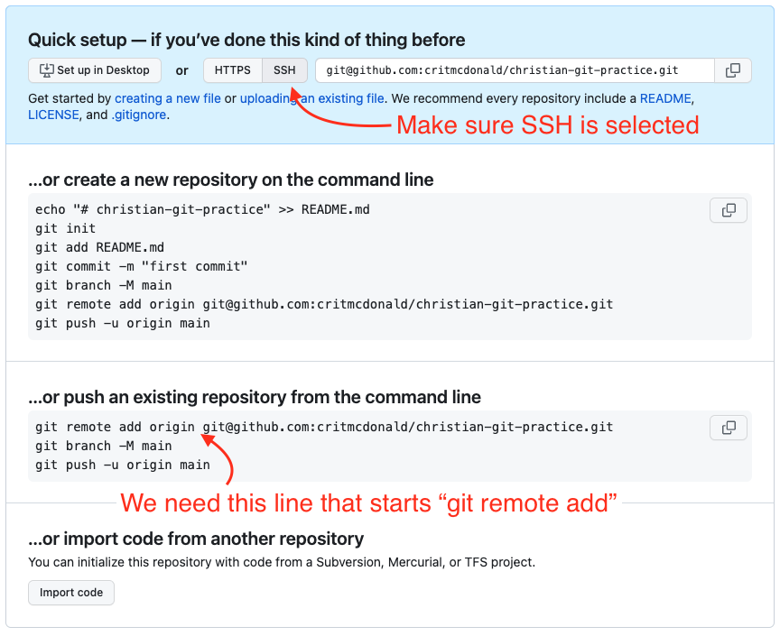

Appendix A — How to start a project
A cheatsheet and lesson on how to start a new project from scratch for Intro to Coding for Journalists. Students may use this in the early weeks of the class to create projects.
Starting a new project with degit, which we use later in the semester, is at the bottom.
Here is a screencast of the complete project setup for a local project including README, gitignore, initializing git, creating a Github repo and connecting it to your local project.
A.1 Overview of the steps
These are the overall steps in case you just need reminders of the order. A more detailed breakdown follows.
- Create a new folder for your project inside your
icjfolder. (You can use your regular computer operating system to do this.) - Launch VS Code.
- Use File > Open folder to then find and choose the folder you created.
- Create a
README.mdfile.- Using Markdown, add a headline with the project name. Add text with your name and the due date of the project.
- Save the file.
- Create a
.gitignorefile.- Use gitignore.io to create the contents of your gitignore file. Use the values “macOS”, “Windows” and “VisualStudioCode” and Create. Copy the contents into the file you created.
- Save the file.
- Commit your local files. In your Terminal do the following:
git initto initialize git.git add .to add all the files to stage.git commit -m "initial commit"to commit the files.
- Go to Github.com and add a New Repository.
- Name it the same as your local folder.
- DO NOT include the README or .gitignore files.
- Once created, review the lines of code Github suggests:
- Make sure under “Quick setup — if you’ve done this kind of thing before” that the SSH button is selected (that the SSH button is grey and that the line of code next to is starts with git@github and NOT https.)
- Find the second block of code options “…or push an existing repository from the command line” and copy the first line of code show there that starts with
git remote add.
- Back in VS Code:
- In your Terminal in VS Code, paste in the line of code and run it.
- Type and run the commenad
git push origin main.
You are now ready to complete the rest of the assignment. You can use the git cycle to commit any further changes.
A.2 The git cycle
As you work through the project, use the git cycle to save your code to your local machine, then push those changes to Github.
git statustells you where you are in the it cycle.git add .adds all changed files into your stagegit commit -m "Your message"commits your changes to your computer.git push origin mainpushes your local changes to Github.
A.3 A very detailed version of starting a new project
This is the same as above, but with more detail, description and visuals.
There is also this screencast of the complete project setup for a local project including README, gitignore, initializing git, creating a Github repo and connecting it to your local project.
A.3.1 Create your project folder
I find it easiest to create the folder using your computer’s operating system: macOS | Windows.
Create this folder inside you Documents/icj so you always know where your code is for this class.
- The assignment will guide you on how to name the folder.
- Always start the folder name with your own name.
- Use all lowercase letters. It’s just helpful.
- Use dashes instead of spaces in the name. It’s helpful, and depending on the project the folder name can end up being part of a URL.
A good example:
christian-project-name
A.3.2 Open the folder in VS Code
Opening the folder in VS Code will make sure that your computer knows where all the files are relative to that folder.
- Launch VS Code
- You might close any windows that might still be open.
- Go to File > Open Folder, find your folder and select it, then click Open.
- Once the folder opens, the document tray should show the folder name.

A.3.3 Create your README
Here is a reminder of why we make a README file.
I find the easiest way to create a new file is to use the Terminal. There are many other ways, but touch is the best all-around way.
- If your Terminal isn’t open already, go to Terminal > New Terminal.
- Do
touch README.md
This will create the file and you’ll see it in the Document tray.
For this class, I want to to at least include this information in your README, adjusted based on the project, of course.
# The project name
By Your Name
The project is due on Month Day Year.A.3.4 Create the .gitignore file
The .gitigore tells git to ignore certain files your computer will create but don’t need to be committed to the repository.
touch .gitignorewill create the file.- In a browser, go to gitignore.io
- Insert the following values: macOS, Windows, VisualStudioCode.

- Hit Create.
- Copy all the text from the resulting window.
- Paste it into your
.gitignorefile in VS Code. Save the file.
A.3.5 Commit your local files
It’s now time to use the parts of the git cycle to commit your files to your local machine, but first we have to tell git that we want to by initializing it.
git initto initialize the project.git add .to add all the files to stage.git commit -m "First commit"to save the files.
We have to create and connect to Github before we can push them.
A.3.6 Create your Github repo
Now we create the repo in Github so we can connect to it.
- Go to Github.com in a browser and log in if you aren’t already.
- At the top right of the page is a big + sign. Click on that and choose New repository.
- For the repository name, I recommend you use the same name as you used for your local folder. Like
christian-project-name. - The Description is optional.
- Keep it Public.
- DO NOT use the README or gitignore options.
- Click the Create repository button.
Once you create the repo, you’ll get a page back with a lot of code.
- Make sure the
SSHbutton is selected in the top box. - Go to the second block “…or push an existing repository from the command line” copy the first line of code there and then run it in your VS Code Terminal.

Use git push origin main to push your code.
If you want to make sure it worked, go back to your browser and refresh the page and you should see your files there.
You should now be ready to continue with the assignment.
A.4 Using degit
Some class projects begin with a set of template files that already include a README and gitignore file. In this case, we create the folder on our hard drive, but use the degit command to download all our needed files.
- Create your project folder inside the
icjfolder. - Launch VS Code and open the folder.
degit utdata/template-namewill download all the files into your folder. BUT YOU’LL WANT TO USE THE CORRECT TEMPLATE NAME.git initwill initialize the repogit add .to add the filesgit commit -m "first committo save the files.- Create your repo in Github.com.
- Copy the first line within the second block and run it.
- Use
git push origin mainto push your changes.
You should be ready to continue with the assignment.